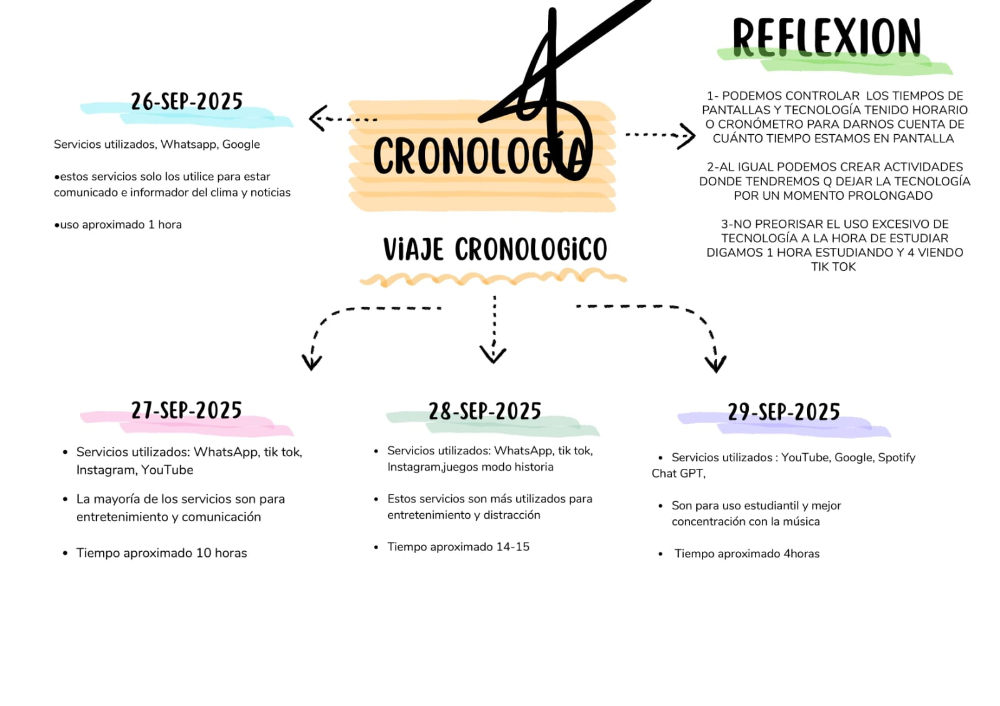
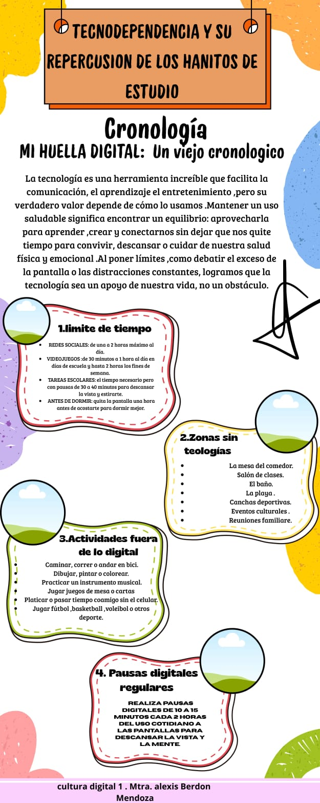

La tecnodependencia es el uso excesivo o incontrolado de dispositivos tecnológicos.
Ocurre cuando la tecnología se vuelve parte central de la rutina diaria.

- Distracción constante
- Problemas de sueño
- Necesidad de revisar el celular
- Ansiedad sin internet